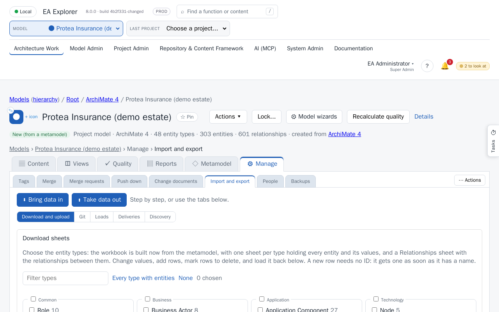

Fill in a delivery template
For: Developers
Write your data so rows match: by type and name.

#/metamodel/{m}/importWhy do this
Rows in a delivery are matched by type and name: an existing entity is updated, a new one added. Keeping the template's columns and allowed values means your file loads the first time. See Data in and out: integration.
Every route in ends the same way: what arrives is shown as new, changed, kept and problem rows, and a person decides. That review is what lets you automate feeds without losing control of the model.
In TOGAF terms: Supports the content of phases B, C and D (baseline architectures), keeping the Architecture Landscape current from the systems that already know it. See EA Explorer and the TOGAF Standard.
The goal: Your data matches the model and loads cleanly.
Steps
- Download the empty template (Import and export, Empty template).
- One row per entity; an existing type and name is updated, a new one added.
- Keep the column names and drop-down values as they are.